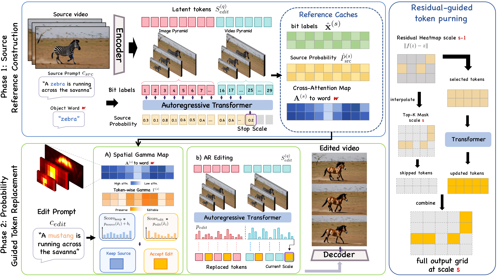
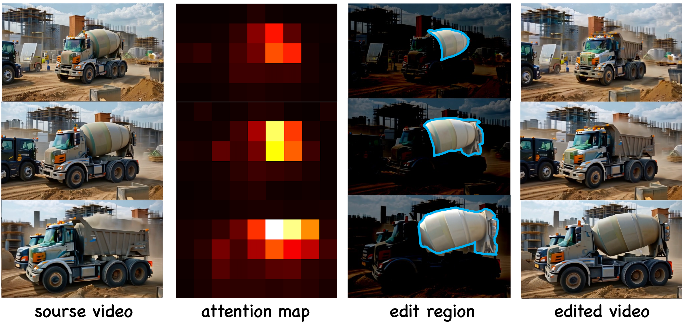

We propose training-free video editing in the discrete token space of visual autoregressive models, using probability-guided token replacement to eliminate the need for lossy inversion.
A persistent trade-off between editability and source fidelity in existing training-free methods, and our solution.
Inversion-based: map the source onto a latent trajectory then regenerate under the target prompt — approximation errors accumulate across frames, causing source-content drift and temporal inconsistency.
Inversion-free: construct source-to-target transformations without trajectory recovery, but source-preserving guidance can restrict semantic deviation, resulting in incomplete edits.
Directly encodes the source video into a coarse-to-fine hierarchy of discrete tokens — no iterative trajectory inversion needed. Editing is performed by selectively preserving or replacing encoded tokens, avoiding inversion-induced drift while retaining direct control over source fidelity.


Qualitative comparison with training-free and training-based video editing methods.
Validating the contribution of each component.